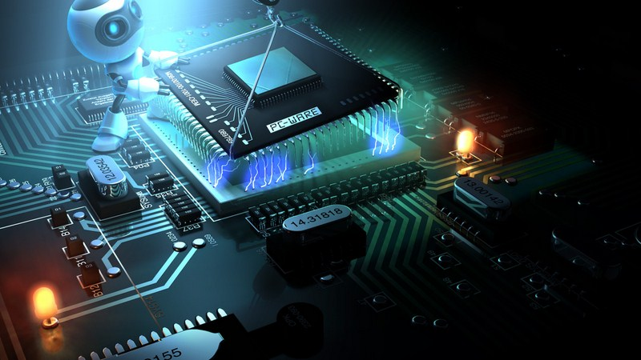
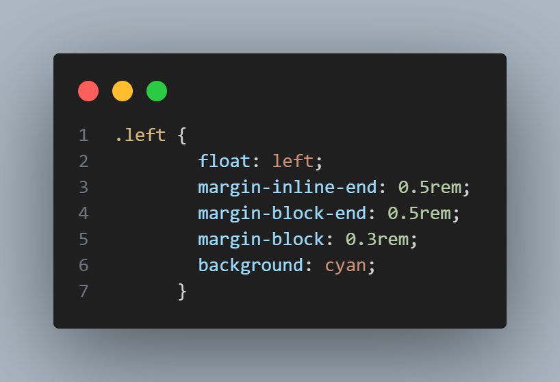
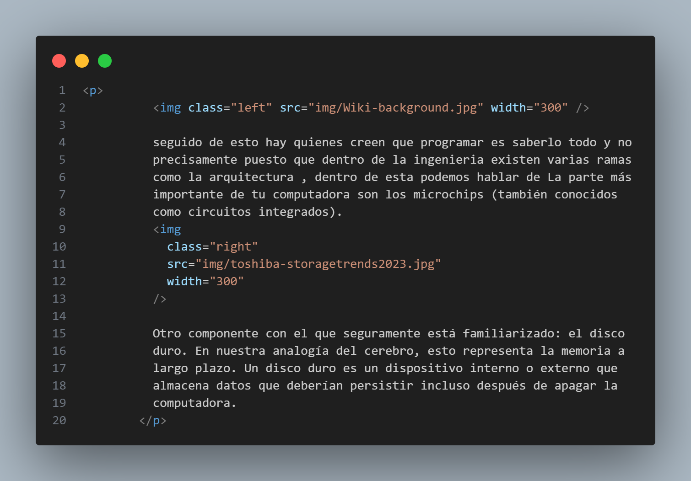

Float
 Es una propiedad CSS coloca un elemento en el lado izquierdo o derecho
de su contenedor, lo que permite que el texto y los elementos en línea
se ajusten a su alrededor. Dicha propiedad nos ayuda a organizar las
imagenes es decir ayuda a no verse muy amontonadas.
Es una propiedad CSS coloca un elemento en el lado izquierdo o derecho
de su contenedor, lo que permite que el texto y los elementos en línea
se ajusten a su alrededor. Dicha propiedad nos ayuda a organizar las
imagenes es decir ayuda a no verse muy amontonadas.
left
El elemento debe flotar en el lado izquierdo de su bloque contenedor.
right
El elemento debe flotar en el lado derecho de su bloque contenedor.
none
El elemento no debe flotar.
inline-start
El elemento debe flotar en el lado inicial de su bloque contenedor.
Ese es el lado izquierdo con ltrguiones y el
lado derecho con rtlguiones.
inline-end
El elemento debe flotar en el lado final de su bloque contenedor. Ese
es el lado derecho con ltrguiones y el lado
izquierdo con rtlrtl guiones.
Los elementos flotantes se colocan como se mencionó anteriormente, cuando un elemento flota, se retira del flujo normal del documento (aunque sigue siendo parte de él). Se desplaza hacia la izquierda o hacia la derecha, hasta que toca el borde del cuadro que lo contiene u otro elemento flotante .
A continuacion haremos un ejemplo utlizando la propiedad float
Pensemos un poco de que hacen los de sistemas
Solo el pensamiento de aprender a programar puede ser muy intimidante. La palabra programar es misteriosa por definición. Eso implica una forma técnica de comunicación que las computadoras, y no los humanos, deben entender.
Arquitectura computacional
 seguido de esto hay quienes creen que programar es saberlo todo y no precisamente puesto que dentro de la ingenieria existen varias ramas como la arquitectura , dentro de esta podemos hablar de La parte más importante de tu computadora son los microchips (también conocidos como circuitos integrados). Otro componente con el que seguramente está familiarizado: el disco duro. En nuestra analogía del cerebro, esto representa la memoria a largo plazo. Un disco duro es un dispositivo interno o externo que almacena datos que deberían persistir incluso después de apagar la computadora.
Un disco duro es como un archivero en el que almacenas libros (cientos o miles). La RAM, por su parte, es el escritorio en el que trabajas con cierta cantidad de libros de manera simultánea (10, 20 o un poco más).
La Línea de Comandos puede resultar intimidante a primera vista. A menudo aparece en las películas como una pantalla negra críptica con texto, números y símbolos incomprensibles que se desplazan. Por lo general, se asocia con un pirata informático malvado o un compañero genio de la tecnología.
Mitos
Ingeniería en Sistemas Computacionales se requiere de ciertas competencias, habilidades y conocimientos, así como una fuerte vocación de estudio y aprendizaje, ya que el campo laboral de ésta implica la resolución de problemas complejos y la creación de estrategias y proyectos. Sin embargo, esto no significa que todos los estudiantes de esta opción académica sean nerds. Y es que hay quienes afirman que quienes estudian esta carrera son personas altamente sedentarias que no salen de su hogar y pasan todo el día estudiando, jugando videojuegos o leyendo historietas, algo que ciertamente es muy falso.
Hackear Facebook
Seguramente has visto en muchas películas que los ingenieros en
sistemas computacionales son contratados por organizaciones para
hackear información de corporaciones poderosas o, sencillamente,
infiltrarse en las cuentas personales de cualquier individuo. Y, si
bien existen ingenieros capaces de hacer esto, definitivamente no es
algo que hagamos todos, ni mucho menos estudiamos la carrera para
esto.
Codigo float
Regresando a float, a continuacion se muestra el codigo utilizado
 